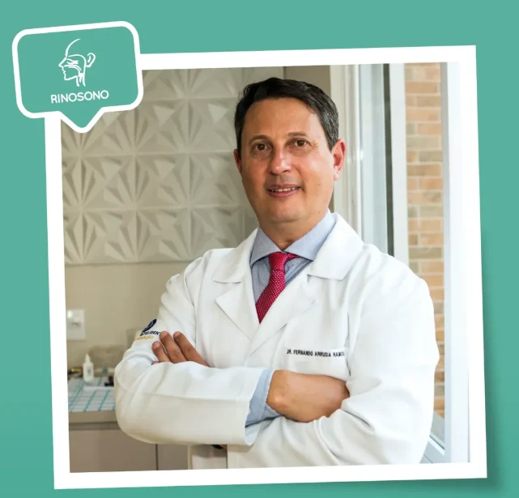

Ouvido, nariz e garganta
Acompanhamento em otorrinolaringologia para investigar alterações e cuidar da sua saúde.
Ver o atendimentoEm Lages, desde 2002.
Cuidado especializado com a sua respiração, audição e sono.

Uma avaliação individual para ouvir sua história, investigar o que incomoda e orientar os próximos passos.
Acompanhamento em otorrinolaringologia para investigar alterações e cuidar da sua saúde.
Ver o atendimentoAtenção à relação entre a respiração e o descanso, com investigação dos sintomas e avaliação do sono.
Ver o atendimentoProfissionais de diferentes áreas reunidos na clínica para atender necessidades de cada paciente.
Ver a equipeConsulte a recepção sobre o profissional, o exame ou o atendimento que você procura.
Uma sequência de quatro vídeos, mais a visita ao Laboratório Morfofuncional da Uniplac.
Escolha uma parte e toque no vídeo para assistir com áudio.
Uma visita ao Laboratório Morfofuncional da Uniplac, com o Dr. Fernando.
Atendimento com o Dr. Fernando Arruda Ramos.
Acompanhe a rotina da clínica, as entrevistas do Dr. Fernando e os conteúdos sobre respiração e sono.
Acompanhar @rinosonolagesSegunda a sexta-feira
8h às 12h · 14h às 18h
Rua Lauro Muller, 880
Centro · Lages, SC
A recepção responde de segunda a sexta, das 8h às 12h e das 14h às 18h.